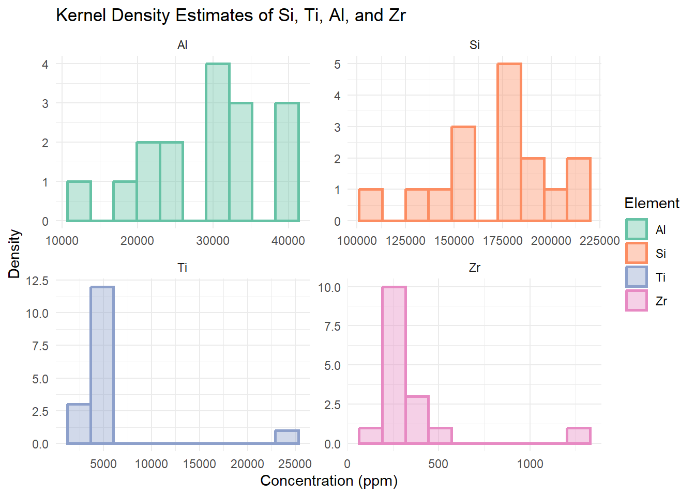
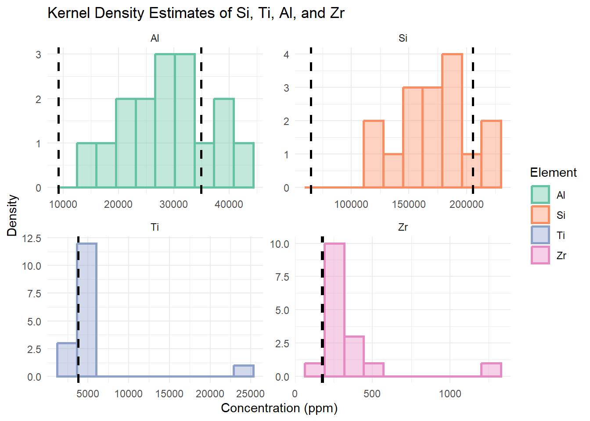
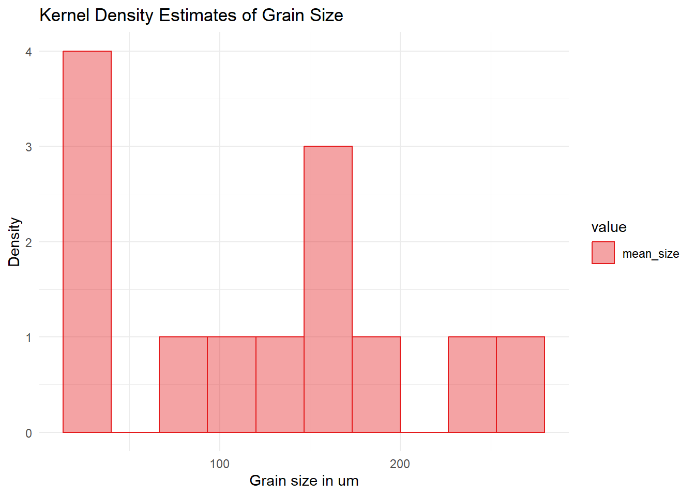
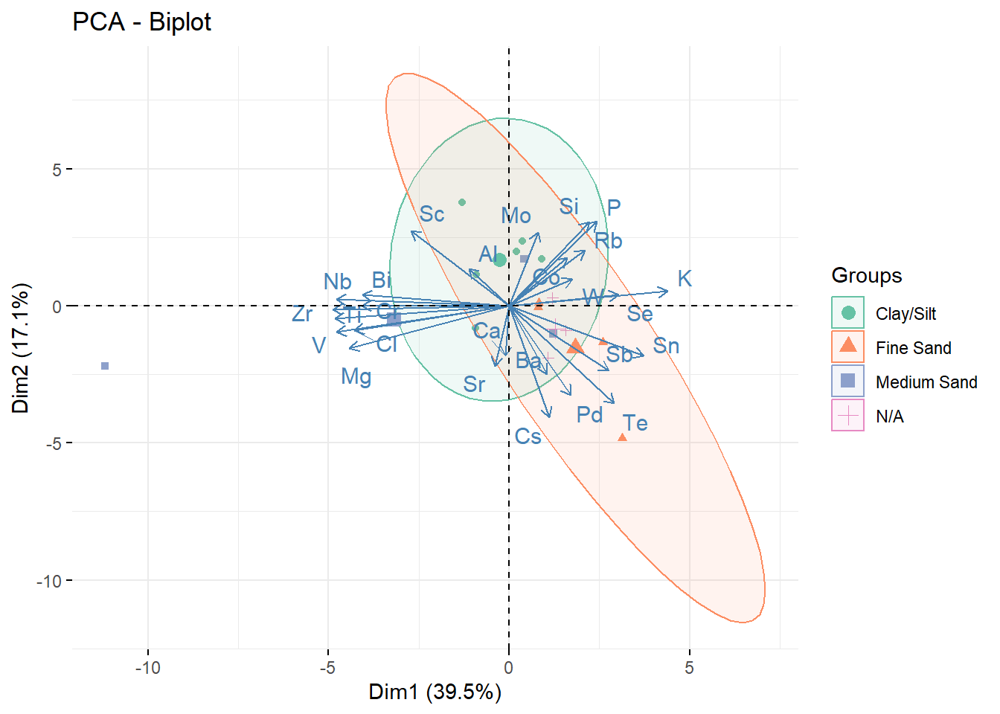
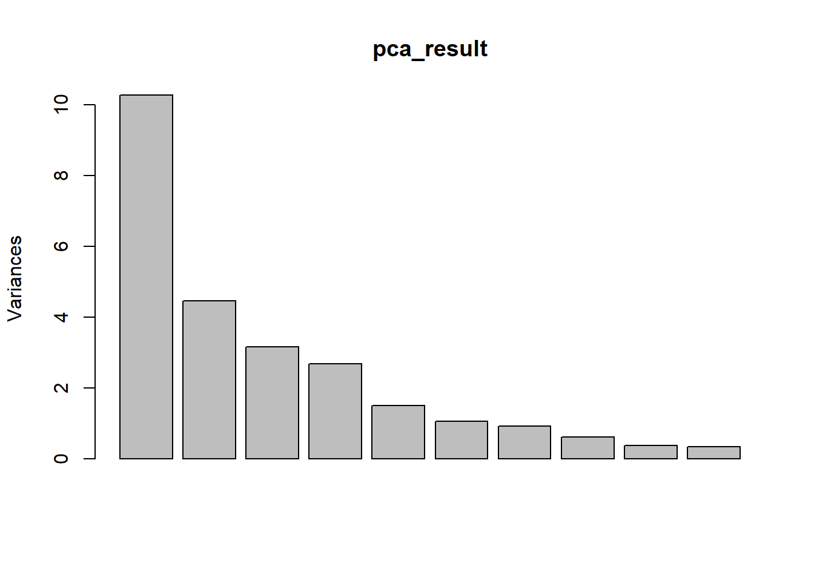
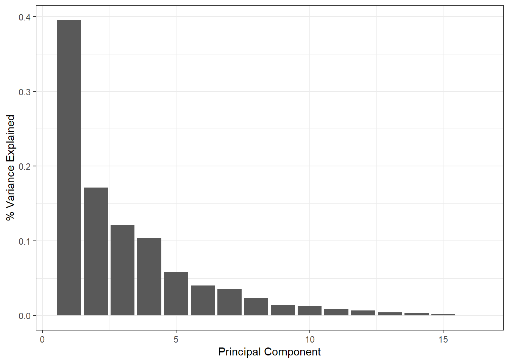

library(knitr)
library(scales)
library(tidyverse)
library(knitr)
library(psych)
# maybe include other libraries:
library(readxl)
library(rlang)
library(factoextra)
library(RColorBrewer)
# set up default plotting format for ggplot2 graphs
theme_set(theme_bw())Geochemical and Grain size relationships from the Chicama Valley, Peru
EES 4891/5891: Probability and Statistics for Geosciences
Introduction
I have generated XRF data from 12 samples of sediment at various depths from the Holocene stratigraphy of Chicama Valley in Peru (sink samples). Four sediment samples were collected from source areas in the highlands of the Andes. I also ran grain size analysis on these samples so I can pick out patterns for how this material is being sorted in the natural landscape and how that relates to the geochemical data. I am trying to quantify different geochemical signatures of the source-to-sink system, as it has many implications for archeology research in this region (one of the six regions that civilization developed independently). It also has implications for agricultural sustainability, since these cultures have been cultivating this land for many millennia without degrading the soil.
Good introduction. You explain clearly what data you’re going to be examining, why it’s interesting to you, and what you hope to learn from it.
However, in describing the data, it’s always important to say something about where it came from. You describe the site (Chicama Valley), but don’t say anything about who collected the data or where you obtained the data file.
Data set
The XRF data consists of 18 rows, each row representing one of the 16 samples, with two rows of standards. There are 110 columns, 10 for metadata, 50 with a count in ppm of the concentration of each element that the XRF analysis tests for and 50 for the error of each elemental concentration. The grain size data is similarly narrow and long, but each sample has three measurements and an average (four total measurements per sample). The columns for this data set contain information on the proportion of each grain size relative to the total number of grains (out of 100) in a sample and the percentile information, which gives grain size at D5, D16, D25, D50, D75, D84, D95 and the mode grain size of each sample in μm.
Good description of the data set.
The data has column names that are too clunky for coding, so I will start by changing the column names of my spreadsheets and removing the unnecessary columns.
chicama_seds <- read_excel("Chicama_020325_grainsize.xlsx") New names:
• `` -> `...3`# rename the columns in chicama seds
rename_cols <- c(
# 'phi_10.8' = 'Result In Range (0.49,0.69) μm',
'phi_9.2' = 'Result In Range (0.69,0.98) μm',
'phi_8.7' = 'Result In Range (0.98,1.38) μm',
'phi_8.2' = 'Result In Range (1.38,1.95) μm',
'phi_7.7' = 'Result In Range (1.95,2.76) μm',
'phi_7.2' = 'Result In Range (2.76,3.91) μm',
'phi_6.7' = 'Result In Range (3.91,5.52) μm',
'phi_6.2' = 'Result In Range (5.52,7.81) μm',
'phi_5.7' = 'Result In Range (7.81,11.05) μm',
'phi_5.2' = 'Result In Range (11.05,15.63) μm',
'phi_4.7' = 'Result In Range (15.63,22.10) μm',
'phi_4.2' = 'Result In Range (22.10,31.25) μm',
'phi_3.7' = 'Result In Range (31.25,44.19) μm',
'phi_3.2' = 'Result In Range (44.19,62.50) μm',
'phi_2.7' = 'Result In Range (62.50,88.39) μm',
'phi_2.2' = 'Result In Range (88.39,125.00) μm',
'phi_1.7' = 'Result In Range (125.00,176.78) μm',
'phi_1.2' = 'Result In Range (176.78,250.00) μm',
'phi_0.7' = 'Result In Range (250.00,353.55) μm',
'phi_0.2' = 'Result In Range (353.55,500.00) μm',
'phi_-0.3' = 'Result In Range (500.00,707.00) μm',
'phi_-1.0' = 'Result In Range (707.00,1000.00) μm',
'phi_-1.3' = 'Result In Range (1000.00,1190.00) μm',
'phi_-1.5' = 'Result In Range (1190,1410) μm',
'phi_-1.7' = 'Result In Range (1410,1630) μm',
'phi_-2.0' = 'Result In Range (1630,2000) μm',
'phi_-2.3' = 'Result In Range (2000,2380) μm',
'phi_-2.5' = 'Result In Range (2380,2830) μm',
'phi_-2.7' = 'Result In Range (2830,3360) μm',
'sample' = 'Sample Name',
'index' = 'Index',
'd32' = 'D [3,2]',
'mean_size' = 'mean_grain_size',
'd5' = 'Dx (5)',
'd16' = 'Dx (16)',
'd25' = 'Dx (25)',
'd50' = 'Dx (50)',
'd75' = 'Dx (75)',
'd84' = 'Dx (84)',
'd95' = 'Dx (95)',
'mode' = 'Mode'
)
# Use dplyr's rename function to selectively rename columns
chicama_seds <- chicama_seds %>%
rename( 'phi_10.8' = 'Result In Range (0.49,0.69) μm' )
#assign column names
chicama_seds <- chicama_seds |> rename(!!!rename_cols)
## select the average grain size distribution of each sample
chicama_seds <- chicama_seds[grepl("_AVG", chicama_seds$sample,
ignore.case = TRUE), ]
## XRF DATA######################################################
chicama_xrf <- read_excel("Chicama112324_xrf.xlsx") ##rename columns
chicama_xrf <- chicama_xrf |>
select(-'Reading No', -LOCATION, -INSPECTOR, -MISC, -NOTE)
chicama_xrf <- chicama_xrf %>% select(-Time)
chicama_xrf <- chicama_xrf %>%
select(-Type, -Sequence, -Flags, -Duration, -Index, -'XL3-76048') Very nice use of the !!! for renaming a large number of columns!
More generally, this is good pratice, to rename clunky column names to more compact names.
Now that we have friendly column names, we can move on to the descriptive statistics of this data.
Descriptive Statistics
First I will look at the statistics of the sediment grain sizes
chicama_seds_stats <- chicama_seds |>
select(-matches("phi", ignore.case = TRUE),
-c(...3, index,sample, d32))
kable(describe(chicama_seds_stats), digits = 2)| vars | n | mean | sd | median | trimmed | mad | min | max | range | skew | kurtosis | se | |
|---|---|---|---|---|---|---|---|---|---|---|---|---|---|
| mean_size | 1 | 13 | 122.82 | 83.78 | 130.86 | 119.82 | 87.89 | 19.32 | 259.30 | 239.99 | 0.17 | -1.47 | 23.24 |
| d5 | 2 | 13 | 15.29 | 31.93 | 4.74 | 6.93 | 2.94 | 2.66 | 119.94 | 117.27 | 2.68 | 5.88 | 8.86 |
| d16 | 3 | 13 | 39.94 | 53.55 | 16.19 | 32.66 | 16.43 | 4.86 | 155.04 | 150.18 | 1.41 | 0.31 | 14.85 |
| d25 | 4 | 13 | 58.49 | 63.09 | 34.67 | 51.28 | 39.83 | 6.93 | 189.38 | 182.46 | 1.08 | -0.42 | 17.50 |
| d50 | 5 | 13 | 116.39 | 88.38 | 133.47 | 112.50 | 127.36 | 16.86 | 258.66 | 241.80 | 0.18 | -1.68 | 24.51 |
| d75 | 6 | 13 | 168.04 | 112.86 | 192.98 | 165.20 | 161.80 | 29.13 | 338.12 | 308.99 | 0.03 | -1.77 | 31.30 |
| d84 | 7 | 13 | 194.25 | 125.34 | 222.97 | 191.91 | 173.42 | 34.65 | 379.56 | 344.91 | -0.01 | -1.76 | 34.76 |
| d95 | 8 | 13 | 276.18 | 166.81 | 326.46 | 274.17 | 189.65 | 45.23 | 529.15 | 483.92 | -0.16 | -1.58 | 46.26 |
| mode | 9 | 13 | 148.91 | 94.04 | 167.55 | 147.92 | 113.02 | 29.37 | 279.33 | 249.96 | -0.07 | -1.84 | 26.08 |
It looks like these samples are mostly in the silt to fine sand category (these measurements are in um).
For the XRF data statistics, I am removing the elements that are reactive in the environment and will not be helpful for sediment tracing.
chicama_xrf_stats <- chicama_xrf |>
select(-matches("error", ignore.case = TRUE),
-c(Units,SAMPLE,Mn,Fe,Zn,Cu,Cd,Ag,Pb,Ni,As,Re,Ta,Hf))
chicama_xrf_stats <- chicama_xrf_stats[-c(1, 12), ]
chicama_xrf_statssheet <- describe(chicama_xrf_stats)
kable(chicama_xrf_statssheet, digits = 2) | vars | n | mean | sd | median | trimmed | mad | min | max | range | skew | kurtosis | se | |
|---|---|---|---|---|---|---|---|---|---|---|---|---|---|
| Mo | 1 | 16 | 4.44 | 3.06 | 4.49 | 4.39 | 4.17 | 0.00 | 9.66 | 9.66 | 0.19 | -1.20 | 0.76 |
| Zr | 2 | 16 | 334.54 | 251.25 | 285.65 | 288.90 | 70.03 | 84.43 | 1223.66 | 1139.23 | 2.69 | 6.88 | 62.81 |
| Sr | 3 | 16 | 187.83 | 82.09 | 180.64 | 185.57 | 57.63 | 37.46 | 369.82 | 332.36 | 0.62 | 0.02 | 20.52 |
| U | 4 | 16 | 1.45 | 2.09 | 1.19 | 1.37 | 2.47 | -2.01 | 6.11 | 8.12 | 0.34 | -0.63 | 0.52 |
| Rb | 5 | 16 | 51.44 | 11.12 | 51.49 | 52.10 | 14.01 | 28.06 | 65.55 | 37.50 | -0.27 | -0.98 | 2.78 |
| Th | 6 | 16 | 10.15 | 3.68 | 9.05 | 9.71 | 3.03 | 5.95 | 20.57 | 14.61 | 1.30 | 1.38 | 0.92 |
| Au | 7 | 16 | 1.95 | 1.75 | 1.76 | 1.87 | 1.93 | -0.36 | 5.41 | 5.77 | 0.54 | -0.98 | 0.44 |
| Se | 8 | 16 | 2.06 | 0.89 | 2.25 | 2.13 | 0.86 | 0.00 | 3.24 | 3.24 | -0.71 | -0.39 | 0.22 |
| Hg | 9 | 16 | 2.74 | 4.15 | 2.29 | 2.70 | 4.07 | -3.83 | 9.78 | 13.60 | 0.33 | -1.14 | 1.04 |
| W | 10 | 16 | 20.46 | 12.80 | 22.93 | 20.85 | 12.26 | -1.01 | 36.39 | 37.40 | -0.44 | -1.35 | 3.20 |
| Co | 11 | 16 | 60.62 | 59.98 | 58.01 | 59.51 | 46.17 | -30.12 | 166.91 | 197.02 | 0.20 | -1.05 | 15.00 |
| Cr | 12 | 16 | 78.45 | 75.40 | 52.56 | 71.69 | 68.83 | -25.21 | 276.71 | 301.92 | 0.93 | 0.50 | 18.85 |
| V | 13 | 16 | 165.63 | 188.32 | 119.30 | 124.09 | 34.86 | 56.49 | 856.44 | 799.95 | 3.04 | 8.34 | 47.08 |
| Ti | 14 | 16 | 5450.75 | 4850.73 | 4735.61 | 4490.23 | 758.83 | 1333.39 | 23015.27 | 21681.88 | 2.89 | 7.80 | 1212.68 |
| Sc | 15 | 16 | 21.85 | 59.22 | 31.83 | 30.30 | 32.40 | -171.67 | 97.19 | 268.86 | -1.95 | 4.41 | 14.80 |
| Ca | 16 | 16 | 20482.49 | 14613.38 | 18192.91 | 19089.80 | 9334.12 | 390.15 | 60072.51 | 59682.36 | 1.17 | 1.07 | 3653.35 |
| K | 17 | 16 | 11547.68 | 2293.27 | 12011.43 | 11920.14 | 1861.69 | 4080.82 | 13800.20 | 9719.38 | -1.99 | 4.19 | 573.32 |
| S | 18 | 16 | 6441.23 | 14839.72 | 657.35 | 3466.70 | 594.86 | 226.07 | 54299.84 | 54073.77 | 2.33 | 4.24 | 3709.93 |
| Ba | 19 | 16 | 500.37 | 101.24 | 496.44 | 493.47 | 87.61 | 354.25 | 743.07 | 388.82 | 0.72 | -0.15 | 25.31 |
| Cs | 20 | 16 | 68.85 | 10.08 | 68.82 | 68.95 | 9.39 | 50.01 | 86.30 | 36.29 | 0.03 | -0.95 | 2.52 |
| Te | 21 | 16 | 83.84 | 19.22 | 83.03 | 83.84 | 23.10 | 51.11 | 116.58 | 65.47 | 0.06 | -1.26 | 4.81 |
| Sb | 22 | 16 | 30.66 | 8.83 | 29.35 | 30.06 | 9.67 | 18.68 | 51.03 | 32.36 | 0.53 | -0.47 | 2.21 |
| Sn | 23 | 16 | 11.77 | 5.77 | 11.34 | 11.85 | 5.15 | 0.00 | 22.38 | 22.38 | -0.08 | -0.55 | 1.44 |
| Pd | 24 | 16 | 2.61 | 4.11 | 0.95 | 2.61 | 2.72 | -3.97 | 9.33 | 13.31 | 0.33 | -1.39 | 1.03 |
| Bal | 25 | 16 | 703373.06 | 37914.22 | 707626.94 | 709693.79 | 18370.57 | 575683.62 | 742572.38 | 166888.75 | -2.21 | 5.21 | 9478.55 |
| Nb | 26 | 16 | 18.18 | 12.83 | 16.37 | 15.96 | 5.25 | 4.63 | 62.82 | 58.19 | 2.51 | 6.29 | 3.21 |
| Bi | 27 | 16 | 4.12 | 6.34 | 0.00 | 3.19 | 0.00 | 0.00 | 21.31 | 21.31 | 1.28 | 0.70 | 1.59 |
| Al | 28 | 16 | 29067.80 | 7950.83 | 29977.09 | 29326.73 | 8252.30 | 13502.78 | 41007.73 | 27504.96 | -0.18 | -1.04 | 1987.71 |
| P | 29 | 16 | 802.46 | 342.47 | 805.80 | 827.43 | 236.20 | 0.00 | 1255.32 | 1255.32 | -0.52 | -0.27 | 85.62 |
| Si | 30 | 16 | 171558.10 | 30422.88 | 175833.83 | 172534.84 | 30038.83 | 111235.71 | 218206.12 | 106970.41 | -0.30 | -0.90 | 7605.72 |
| Cl | 31 | 16 | 1000.68 | 2785.95 | 0.00 | 441.43 | 0.00 | 0.00 | 9830.80 | 9830.80 | 2.31 | 3.96 | 696.49 |
| Mg | 32 | 16 | 2375.46 | 2590.60 | 2281.53 | 1931.68 | 1073.78 | 0.00 | 10963.79 | 10963.79 | 2.09 | 4.73 | 647.65 |
| SiO2 | 33 | 16 | 367134.35 | 65104.96 | 376284.41 | 369224.57 | 64283.10 | 238044.44 | 466961.12 | 228916.69 | -0.30 | -0.90 | 16276.24 |
| TiO2 | 34 | 16 | 9102.74 | 8100.72 | 7908.46 | 7498.69 | 1267.25 | 2226.76 | 38435.50 | 36208.74 | 2.89 | 7.80 | 2025.18 |
| Fe2O3 | 35 | 16 | 68438.63 | 61837.10 | 54902.01 | 56382.92 | 17311.19 | 17856.33 | 287800.88 | 269944.54 | 2.71 | 6.96 | 15459.27 |
| Al2O3 | 36 | 16 | 54938.14 | 15027.06 | 56656.71 | 55427.53 | 15596.85 | 25520.25 | 77504.62 | 51984.37 | -0.18 | -1.04 | 3756.77 |
| K2O | 37 | 16 | 13972.70 | 2774.85 | 14533.83 | 14423.37 | 2252.65 | 4937.79 | 16698.24 | 11760.45 | -1.99 | 4.19 | 693.71 |
| CaO | 38 | 16 | 28675.49 | 20458.74 | 25470.08 | 26725.72 | 13067.77 | 546.21 | 84101.52 | 83555.31 | 1.17 | 1.07 | 5114.68 |
| MgO | 39 | 16 | 3943.26 | 4300.39 | 3787.35 | 3206.59 | 1782.48 | 0.00 | 18199.89 | 18199.89 | 2.09 | 4.73 | 1075.10 |
chicama_Si_avg = (chicama_xrf_statssheet$mean[30] -
chicama_xrf$Si[1])/ chicama_xrf$Si[1]
chicama_Al_avg = (chicama_xrf_statssheet$mean[28] -
chicama_xrf$Al[1])/ chicama_xrf$Al[1]
chicama_Ti_avg = (chicama_xrf_statssheet$mean[14] -
chicama_xrf$Ti[1])/ chicama_xrf$Ti[1]
Ti_median = (chicama_xrf_statssheet$median[14] -
chicama_xrf$Ti[1])/ chicama_xrf$Ti[1]
Zr_avg = (chicama_xrf_statssheet$mean[2] -
chicama_xrf$Zr[1])/ chicama_xrf$Zr[1]It might be better to use filter(str_detect(SAMPLE, "NIST")) to remove the NIST standards, rather than removing the rows by their row number.
XRF data
I will be taking a look at how some of the elemental data compares to the NIST Standard. When standardized, I have values for Si = 1.6430467 , Al = 2.1970863, Ti = 0.4401309, and Zr = 0.9455443. It’s interesting that all three of the mean elemental concentrations in my samples are above the standard. Ti is the closest mean to the standard- lets check out its median compared to the standard: 0.2511851 … That is also close to 0, and so represents the standard well. Now, some kernel density estimates of the main variables I’ll be using.
You should explain what the NIST standards are and what the significance is of comparing elemental composition of the Chicama Valley sediments to the NIST standards.
You don’t expect that all sediments will have the same mineral composition, so you wouldn’t expect their elemental composition to match the NIST standards, but this would be a good place to explain what the comparison means.
chicama_xrf_kde <- chicama_xrf_stats %>% select(Si, Ti, Al, Zr) |>
pivot_longer(cols = everything(), names_to = "Element", values_to = "Value")
ggplot(chicama_xrf_kde, aes(x = Value, fill = Element, color = Element)) + geom_density(alpha = 0.4, linewidth = 1) +
facet_wrap(~Element, scales = "free")+
theme_minimal() +
labs(title = "Kernel Density Estimates of Si, Ti, Al, and Zr",
x = "Concentration (ppm)",
y = "Density") +
scale_fill_brewer(palette = "Set2") +
scale_color_brewer(palette = "Set2")
Your R code makes excellent use of pivoting and faceting your plots.
Overall in this report, I’m impressed with how skillfully you use R and the tidyverse methods and philosophy.
It looks like Ti and Zr have a very similar KDE plots, both have high, narrow peaks, meaning the values do not vary widely between samples. This is opposite for the Si and Al kernel densities, as these values vary more widely.
When you only have 18 observations, kernel-density estimates may not be as useful as histograms.
ggplot(chicama_xrf_kde, aes(x = Value, fill = Element,
color = Element)) +
geom_histogram(bins = 10, alpha = 0.4, linewidth = 1) +
facet_wrap(~Element, scales = "free")+
theme_minimal() +
labs(title = "Kernel Density Estimates of Si, Ti, Al, and Zr",
x = "Concentration (ppm)",
y = "Density") +
scale_fill_brewer(palette = "Set2") +
scale_color_brewer(palette = "Set2")
Also, it could be useful to add some markers to show where the NIST standards were:
nist_xrf_stats <- chicama_xrf |>
select(-matches("error", ignore.case = TRUE),
-c(Units,SAMPLE,Mn,Fe,Zn,Cu,Cd,Ag,Pb,Ni,As,Re,Ta,Hf))
nist_xrf_stats <- nist_xrf_stats[c(1, 12), ]
nist_xrf_kde <- nist_xrf_stats %>% select(Si, Ti, Al, Zr) |>
pivot_longer(cols = everything(), names_to = "Element",
values_to = "Value")
ggplot(chicama_xrf_kde, aes(x = Value, fill = Element,
color = Element)) +
geom_histogram(bins = 10, alpha = 0.4, linewidth = 1) +
geom_vline(data = nist_xrf_kde, aes(xintercept = Value),
color = "black", linetype = "dashed", linewidth = 1) +
facet_wrap(~Element, scales = "free")+
theme_minimal() +
labs(title = "Kernel Density Estimates of Si, Ti, Al, and Zr",
x = "Concentration (ppm)",
y = "Density") +
scale_fill_brewer(palette = "Set2") +
scale_color_brewer(palette = "Set2")
Grain Size
I would like to run this same analysis on the mean grain size of my samples. Here are the kernel density estimates of my 13 samples:
chicama_seds_kde <- chicama_seds |> select(mean_size) |>
pivot_longer(cols = everything(), names_to = "value",
values_to = "Size")
ggplot(chicama_seds_kde, aes(x = Size, fill = value, color = value)) +
geom_density(alpha = 0.4, linewidth = 1) +
theme_minimal() +
labs(title = "Kernel Density Estimates of Grain Size",
x = "Grain size in um",
y = "Density") +
scale_fill_brewer(palette = "Set1") +
scale_color_brewer(palette = "Set1")
This plot shows the wide distribution of sizes. This may be due to the low number of samples, but I would like to compare the grain size for different proxies for grain size to see their correlation. I think it will be best to combine these two separate spreadsheets since they both contain information for the same 16 samples (A1, A2, etc).
Again, with as few observations as you have, a histogram might be more informative than a kernel-density plot.
ggplot(chicama_seds_kde, aes(x = Size, fill = value, color = value)) +
geom_histogram(bins = 10, alpha = 0.4) +
theme_minimal() +
labs(title = "Kernel Density Estimates of Grain Size",
x = "Grain size in um",
y = "Density") +
scale_fill_brewer(palette = "Set1") +
scale_color_brewer(palette = "Set1")
It might also have been nice to do a full kernel density plot for the distribution of grain sizes at each site, rather than just the mean grain size.
# Remove suffixes for matching
chicama_seds$sample_norm <- gsub("_CHICAMA_AVG", "", chicama_seds$sample)
chicama_xrf$sample_norm <- gsub("_CHICAMA", "", chicama_xrf$SAMPLE)
# Get a normalized sample name
chicama_combined <- merge(chicama_xrf, chicama_seds,
by = "sample_norm", all.x = TRUE)
#remove the standard readings from the XRF data
chicama_combined <- chicama_combined[-c(17, 18), ]
#only select the columns I want for correlation
chicama_combined_corr <- chicama_combined |>
select(c(Si, Ti, Zr, Al, mean_size, d50, sample_norm))
#add columns for the grain_size proxy ratios
chicama_combined_corr <- chicama_combined_corr |>
mutate( Ti_Si = Ti / Si,
Al_Si = Al / Si,
Ti_Zr = Ti / Zr )I have included the ratios because they should hopefully be able to correlate elemental concentrations to grain size. high ratios should show a high proportion of fine material (clays) compared with low values that should correlate to coarser samples. Now, let’s plot their 2D density plot to show how they correlate.
##Si/Ti against grain size
ggplot(chicama_combined_corr, aes(x = Ti_Si, y = mean_size)) +
geom_density_2d_filled() +
geom_point(color = "red", alpha = 1, size = 1) +
scale_fill_viridis_d() +
scale_x_continuous(expand = c(0,0)) +
scale_y_continuous(expand = c(0,0)) +
theme_minimal() +
labs(title = "2D Density of Ti/Si vs Grain Size",
x = "Ti/Si Ratio",
y = "Grain Size (um)") Warning: Removed 3 rows containing non-finite outside the scale range
(`stat_density2d_filled()`).Warning: Removed 3 rows containing missing values or values outside the scale range
(`geom_point()`).
##Zr/Ti against mean grain size
ggplot(chicama_combined_corr, aes(x = Ti_Zr, y = mean_size)) +
geom_density_2d_filled() +
geom_point(color = "red", alpha = 1, size = 1) +
scale_fill_viridis_d( option = "magma") +
scale_x_continuous(expand = c(0,0)) +
scale_y_continuous(expand = c(0,0)) +
theme_minimal() +
labs(title = "2D Density of Zr/Ti vs Grain Size",
x = "Ti/Zr Ratio",
y = "Grain Size (um)") Warning: Removed 3 rows containing non-finite outside the scale range
(`stat_density2d_filled()`).
Removed 3 rows containing missing values or values outside the scale range
(`geom_point()`).
##Al/Si against mean grain size
ggplot(chicama_combined_corr, aes(x = Al_Si, y = mean_size)) +
geom_density_2d_filled() +
geom_point(color = "red", alpha = 1, size = 1) +
scale_fill_viridis_d( option = "turbo") +
scale_x_continuous(expand = c(0,0)) +
scale_y_continuous(expand = c(0,0)) +
theme_minimal() +
labs(title = "2D Density of Al_Si vs Grain Size",
x = "Al_Si Ratio",
y = "Grain Size (um)")Warning: Removed 3 rows containing non-finite outside the scale range
(`stat_density2d_filled()`).
Removed 3 rows containing missing values or values outside the scale range
(`geom_point()`).
These are interesting plots, but your choice to use a different color scheme for each plot makess it hard to compare them. It would be better to pick one color scheme and stick with it consistently in all the plotss.
These do not show a great relationship at all! Maybe plotting them versus median grain size will be better:
##Si/Ti against grain size
ggplot(chicama_combined_corr, aes(x = Ti_Si, y = d50)) +
geom_density_2d_filled() +
geom_point(color = "red", alpha = 1, size = 1) +
scale_fill_viridis_d() +
scale_x_continuous(expand = c(0,0)) +
scale_y_continuous(expand = c(0,0)) +
theme_minimal() +
labs(title = "2D Density of Si/Ti vs Grain Size (Median)",
x = "Si/Ti Ratio",
y = "Grain Size (um)") Warning: Removed 3 rows containing non-finite outside the scale range
(`stat_density2d_filled()`).Warning: Removed 3 rows containing missing values or values outside the scale range
(`geom_point()`).
##Zr/Ti against mean grain size
ggplot(chicama_combined_corr, aes(x = Ti_Zr, y = d50)) +
geom_density_2d_filled() +
geom_point(color = "red", alpha = 1, size = 1) +
scale_fill_viridis_d( option = "magma") +
scale_x_continuous(expand = c(0,0)) +
scale_y_continuous(expand = c(0,0)) +
theme_minimal() +
labs(title = "2D Density of Zr/Ti vs Grain Size (median)",
x = "Zr/Ti Ratio",
y = "Grain Size (um)") Warning: Removed 3 rows containing non-finite outside the scale range
(`stat_density2d_filled()`).
Removed 3 rows containing missing values or values outside the scale range
(`geom_point()`).
##Al/Si against mean grain size
ggplot(chicama_combined_corr, aes(x = Al_Si, y = d50)) +
geom_density_2d_filled() +
geom_point(color = "red", alpha = 1, size = 1) +
scale_fill_viridis_d( option = "turbo") +
scale_x_continuous(expand = c(0,0)) +
scale_y_continuous(expand = c(0,0)) +
theme_minimal() +
labs(title = "2D Density of Al_Si vs Grain Size (median)",
x = "Al_Si Ratio",
y = "Grain Size (um)")Warning: Removed 3 rows containing non-finite outside the scale range
(`stat_density2d_filled()`).
Removed 3 rows containing missing values or values outside the scale range
(`geom_point()`).
Again, there are consistency problems. Your titles and axes say Si/Ti and Zr/Ti, when you mean Ti/Si and Ti/Zr.
These ratios still show very weak correlation. How should I find which elements correlate to grain size? I think I will try to uncover that question with this project.
As with the one-dimensional grain-size density plot, it might have been nice to plot the full grain-size distribution versus elemental composition, rather than just the mean or median grain size.
Research Questions
For this project, I’d like to test how different elements are related to grain size. Specifically, how well elemental concentrations of non reactive elements in the soil samples correlate with average grain size from each sample. For this, I will be running a principal component analysis (PCA) on multiple elements and comparing them to the different size fractions of grains (clay/silt, fine sand, and sand).
PC Analysis is a good method for this kind of data. Nice choice.
#create categories for grain size
chicama_combined <- chicama_combined |>
mutate(GrainSizeCategory = case_when(
d50 < 63 ~ "Clay/Silt",
d50 < 200 ~ "Fine Sand",
d50 < 500 ~ "Medium Sand",
TRUE ~ "N/A" ))
## #Select geochemical columns
pca_data <- chicama_combined |>
select(Si, Ti, Al, Zr, Sr, Ca, Mo, Rb, Se, W, Co, Cr, V, Sc, K, Ba, Cs, Bi, Te, Sb, Sn, Pd, Nb, P, Cl, Mg )
# Standardize the data
pca_data_scaled <- scale(pca_data)
# Run PCA
pca_result <- prcomp(pca_data_scaled, center = TRUE, scale. = TRUE )
# graphs
fviz_pca_biplot(pca_result,
label = "var",
habillage = chicama_combined$GrainSizeCategory,
addEllipses = TRUE,
palette = "Set2",
repel = TRUE)Too few points to calculate an ellipse
Too few points to calculate an ellipse
First, you don’t have to scale the data manually. prcomp(pca_data, center = TRUE, scale = TRUE) will give the same result as prcomp(pca_data_scaled, center = TRUE, scale = TRUE). That’s what the scale = TRUE does.
Also, it’s often good, with PCA to plot a scree plot, showing the fraction of variance explained by each principal component, to give a sense of how much information you get from each principal component.
screeplot(pca_result)
or
tibble(sd = pca_result$sdev, i = seq_along(sd),
var = sd^2 / sum(sd^2)) |>
ggplot(aes(x = i, y = var)) +
geom_col() +
labs(x = "Principal Component", y = "% Variance Explained")
After analyzing the output from the PCA, I think I will now test the elements with the longer arrows in the direction of the fine sands Sn, and Te. I will also test two variables with a stronger direction in the clay/silt direction: Sc and Mo. This allows me four possible elements positively and negatively correlated with different grain sizes according to the PCA output.
By plotting the outputs of the PCA (loadings), this will give us a better idea if these were the best choices
loadings <- as.data.frame(pca_result$rotation)
# Add element names as a column
loadings$Element <- rownames(loadings)
loadings_long <- loadings |>
select(Element, PC1, PC2) |>
pivot_longer(cols = starts_with("PC"), names_to = "Component", values_to = "Loading")
ggplot(loadings_long, aes(x = reorder(Element, Loading), y = Loading, fill = Component)) +
geom_col() +
coord_flip() +
facet_wrap(~ Component, scales = "free_x") +
labs(title = "Loadings on PC1 and PC2", x = "Element", y = "Loading") + theme_minimal()
Ok, I was pretty close, but I think for my next steps I will include my K and V (from PC1 with high values that were not Zr and Ti) and Cs and Te, (the highest values from PC2 and negatively correlated). I will include Zr and Ti again, just to see how they compare with these new elements.
This next step will be to run a regression analysis on these elements to understand their relationship to d50 (median grain size).
model1 <- lm(d50 ~ K + Te + Cs + V + Zr + Ti, data = chicama_combined)
summary(model1)
Call:
lm(formula = d50 ~ K + Te + Cs + V + Zr + Ti, data = chicama_combined)
Residuals:
Min 1Q Median 3Q Max
-80.719 -34.131 1.722 15.874 124.382
Coefficients:
Estimate Std. Error t value Pr(>|t|)
(Intercept) 440.60759 657.26363 0.670 0.528
K -0.02839 0.03187 -0.891 0.407
Te 4.75048 2.99680 1.585 0.164
Cs -5.30497 6.53988 -0.811 0.448
V 0.20550 1.60163 0.128 0.902
Zr -0.40675 0.57344 -0.709 0.505
Ti 0.01312 0.06756 0.194 0.852
Residual standard error: 86.19 on 6 degrees of freedom
(3 observations deleted due to missingness)
Multiple R-squared: 0.5245, Adjusted R-squared: 0.04902
F-statistic: 1.103 on 6 and 6 DF, p-value: 0.4541It appears that perhaps I don’t have enough samples for this type of analysis to be accurate. I received an adjusted r-squared value of 0.04 and a p-value of 0.5, which means none of these variables can be used to accurately predict grain size. I think I will pivot to using a cluster analysis to see if multiple concentrations can group samples into groups based on some shared traits which may be grain size or a different parameter. This way I can try to pick out trends in the few samples I have until I collect more field data this summer.
Yes. You don’t have grain size analysis for samples A8, A9, and A10, so there are only 13 complete observations that can be used in the regression, and with 6 predictor variables, that leaves you with only 6 degrees of freedom (\(13 - 6 = 1\), for the six slopes and the intercept)
One advantage of PCA is that it allows you to
cluster_data <- chicama_combined |>
select(sample_norm, Si, Ti, Al, Zr, Sr, Ca, Mo, Rb, Se, W, Co, Cr, V, Sc, K, Ba, Cs, Bi, Te, Sb, Sn, Pd, Nb, P, Cl, Mg ) |>
na.omit()
valid_ids <- chicama_combined$sample_norm
# standardize the data
cluster_data_scaled <- scale(cluster_data |> select(-sample_norm))
#clustering
dist_mat <- dist(cluster_data_scaled)
hc <- hclust(dist_mat, method = "ward.D2")
clusters <- cutree(hc, k = 3)
rownames(cluster_data_scaled) <- valid_ids
pca_result <- prcomp(cluster_data_scaled, center = TRUE, scale. = TRUE)
plot_data <- data.frame(sample_norm = valid_ids,
Cluster = factor(clusters))
fviz_pca_ind(pca_result,
geom.ind = c("point", "text"),
col.ind = plot_data$Cluster,
label = "all",
palette = "Set2",
addEllipses = TRUE,
legend.title = "Cluster",
repel = TRUE)Too few points to calculate an ellipse
This is a lot more helpful - here, the samples are clustered based on similarities in elemental concentrations. The outlier (A7) is sand from the beach, visibly different in color, texture and mineralogy, so that validates why it is such an outlier. Now, we can see if there are any similarities in grain sizes between the clusters or if elemental concentrations point to something else.
This is nice.
Hypotheses and Tests
Now that my samples are clustered, I would like to find out their relationships.
Hypotheses
My first set of hypothesis will be reflecting the relationships between grain size and these geochemical clusters:
Ha1: The clay/silt from the samples (d5) will be significantly different between the clusters.
Ha2: The median grain size from the samples (d50) will be significantly different between the clusters.
Ha3: The coarser fraction (sand) from the samples (d95) will be significantly different between the clusters.
Ha0: There is no significant difference between grain size and these geochemical clusters
My second set of hypothesis are regarding the geochemical composition between the clusters. For this hypothesis I will be using the same elements from the regression analysis ( K, Te, Cs, V, Ti, Zr, Si, K):
Hb1: The lower concentration elements (Te, Cs, V, Zr) will be significantly different between clusters 1 & 2.
Hb2: The higher concentration elements (Ti, Si, K) will be significantly different between clusters 1 & 2.
Hb0: There will be no significant difference between these elements and the geochemical clusters
To test these hypothesis, I will be using a kruskal wallis test for this non-parametric data.
chicama_combined$Cluster <- factor(clusters)Hypothesis Tests
Here is the code to test H1:
# d5 is the 5th percentile of size (clay and silt)
kruskal.test(d5 ~ Cluster, data = chicama_combined)
Kruskal-Wallis rank sum test
data: d5 by Cluster
Kruskal-Wallis chi-squared = 5.2308, df = 2, p-value = 0.07314# d50 is the 50th percentile (median) of size
kruskal.test(d50 ~ Cluster, data = chicama_combined)
Kruskal-Wallis rank sum test
data: d50 by Cluster
Kruskal-Wallis chi-squared = 5.2198, df = 2, p-value = 0.07354# d95 is the 95th percentile of size (fine-medium sand)
kruskal.test(d95 ~ Cluster, data = chicama_combined)
Kruskal-Wallis rank sum test
data: d95 by Cluster
Kruskal-Wallis chi-squared = 6.7692, df = 2, p-value = 0.03389If I use a p-value of 0.05 for statistical significance, I reject the null hypothesis and accept Ha3, that there is some significant difference between these clusters and the sand size 95th percentile of my samples. I cannot reject the null hypothesis for my other two alternate hypothesis (Ha1 & Ha2), as they are both above the 0.05 p-value threshold.
Here is a visualization of the relationship between d95 and these clusters
ggplot(chicama_combined, aes(x = Cluster, y = d95, fill = Cluster)) +
geom_boxplot(color = "black", outlier.shape = 21, outlier.fill = "white") +
scale_fill_brewer(palette = "Dark2") +
theme_minimal(base_size = 14) +
labs(title = "D95 grain size by Cluster",
x = "Cluster",
y = "D95 grain size (um)") +
theme(legend.position = "none")Warning: Removed 3 rows containing non-finite outside the scale range
(`stat_boxplot()`).
This visual shows that d95 is discrete between the clusters. With more samples, this should be interesting to see how this holds up.
The next tests will be in a similar fashion using a kruskal wallis test to understand the relationship between the elements I identified as having high PCA loadings from the earlier analysis.
You should be sure to capitalize Kruskal Wallis.
elements <- c("Si", "Zr", "K", "Ti", "V", "Cs", "Te")
results <- lapply(elements, function(var) {
test <- kruskal.test(as.formula(paste(var, "~ Cluster")),
data = chicama_combined)
data.frame(Element = var, p_value = test$p.value) })
do.call(rbind, results) Element p_value
1 Si 0.094508205
2 Zr 0.007805387
3 K 0.126824507
4 Ti 0.144240316
5 V 0.126824507
6 Cs 0.006771057
7 Te 0.003476377The results here are interesting- If I use a p-value of 0.05, I cannot reject the null hypothesis because the p-values of the higher concentration elements (Si, Ti, K) are all above 0.05 and one element from the small concentration group (V) is much larger than 0.05. However, it should be noted that the other smaller concentration elements (Te, Cs, and Zr) all are much lower than the 0.05 p-value. So for them, I can say that there is a significant difference between the concentration of elements Te, Cs, and Zr and the clusters.
Here is a visual that shows these elements and their relationship to the clusters:
ggplot(chicama_combined, aes(x = Cluster, y = Te, fill = Cluster)) +
geom_boxplot(color = "black", outlier.shape = 21, outlier.fill = "white") +
scale_fill_brewer(palette = "Pastel1") + theme_minimal(base_size = 14) +
labs(title = "Te conc. by Cluster",
x = "Cluster",
y = "Te concentration (ppm)") +
theme(legend.position = "none") 
ggplot(chicama_combined, aes(x = Cluster, y = Cs, fill = Cluster)) +
geom_boxplot(color = "black", outlier.shape = 21, outlier.fill = "white") +
scale_fill_brewer(palette = "Pastel2") +
theme_minimal(base_size = 14) +
labs(title = "Cs conc. by Cluster",
x = "Cluster",
y = "Cs concentration (ppm)") +
theme(legend.position = "none") 
ggplot(chicama_combined, aes(x = Cluster, y = Zr, fill = Cluster)) +
geom_boxplot(color = "black", outlier.shape = 21, outlier.fill = "white") +
scale_fill_brewer(palette = "Dark1") +
theme_minimal(base_size = 14) +
labs(title = "Zr conc. by Cluster",
x = "Cluster",
y = "Zr concentration (ppm)") +
theme(legend.position = "none")Warning: Unknown palette: "Dark1"
Results and Discussion
The results from the hypothesis tests show that even though this data does not correlate with many of the standard ways to relate grain size to geochemical signatures from the samples, there is plenty of other ways to see the relationship in the data. While this analysis was hampered by the low number of samples available, It’s good to see that the data does have a few trends and hopefully these will be more clear as I add to the samples in subsequent field seasons.
The small number of samples is almost surely affecting your ability to test your hypotheses.
When you have small number of samples, especially, it’s very important to understand that there’s nothing magical about the \(p = 0.05\) criterion for statistical significance. As I mentioned early in the semester, there’s a famous paper by Andrew Gelman and Hal Stern, which showed that there is no statistically significant difference between ressults with \(p\) slightly higher than 0.05 and \(p\) slightly less than 0.05: Gelman, A. & Stern, H. (2006). “The Difference Between ‘Significant’ and ‘Not Significant’ is not Itself Statistically Significant.” The American Statistician, 60(4), 328–-331. DOI: 10.1198/000313006x152649
Also, your clusters are defined by elemental composition from your PCA, so it’s not clear what additional information you’d expect in looking at individual elements, since the clustering is already based on elemental composition.
However, looking at the loading figure on PC1 and 2, it looks like Sc, Sn, Al, SB, Ba, Pd, and Bi might be useful to look at, in addition to the elements you examine here. They are all anticorrelated with large loadings on one or the other of the PCs.
Also, if you had more time, it might have been interesting to so another PCA on the grain-size distributions (e.g., the full set of \(D_x\) or \(\phi\) values for each site) to see whether there might be clustering on relative amounts of differently sized sediment grains. Then you could look at how the PC1 and PC2 for the elemental composition correlated with the PC1 and PC2 for the grain-size distribution.
When you have small samples, using principal component analysis to reduce the number of dimensions can help to ensure that you keep the largest number of degrees of freedom for regression analysis.
This is also a place where full Bayesian analysis might be helpful, but that would be beyond the scope of what we did this semester, so it’s not something I would expect from you. Still, it could be interesting as you keep working on this data in the future.
It makes sense that it would be hard to pull relationships from the high concentration elements like silica and titanium. Since there is such few samples, the differences are exaggerated. For grain size relationships, I think their groupings may be more complex. In the region I study, there are multiple ways that deposition occurs: through human canal networks distributing fine (clay and sand) sediments and El Nino flooding, which can move all types of grain sizes, and the relative contribution to sedimentation from each of these means is unknown. This may be the first step in trying to identify some of these relationships.
Conclusions
This was a valuable exercise in testing established assumptions- There are many ways that grain size can be reflected in geochemistry- but in my samples from the Chicama Valley, Peru, these relationships do not show up well, potentially for a number of reasons. I had to pivot to see how these geochemical signatures relate amongst the samples and then try grain size relationships with those groups to establish their relationship. It was rewarding to see that the sand is better reflecting of these geochemical signatures, and I will continue to pursue why the silt and clay do not follow suit, although I have an idea that it may be due to the different depositional regimes (humans and El Nino). As far as geochemistry goes, identifying which elements are found in the different groups is the first step of sediment tracing. Once I identify the spatial locations of the samples and clusters, I can begin to see how the geochemistry can be used to trace back the sediment to its source locations. This will be paramount in my research that looks at erosion and land-use of the upper catchment of this river system. For the future, I will need to add more samples to this collection to better establish these relationships.
Summary
YOu have a very interesting data set, and have used an impressive number of statistical techniquess for analysing it. In the end, the small number of observations limits your ability to draw any definitive conclusions, so you are left with suggestive results, but are unable to draw a lot of definitive conclusions. This is a place where getting more data in the future could be very helpful.
You make impressive use of R’s capabilities and of the tidyverse package in particular in organizing your data. Your use of PCA and cluster analysis is also impressive.
There are a few places where you could have made better choices in the kinds of analysis you did and the way you present results: * When you have a small number of observations, histograms can be clearer than kernel-density estimates for understanding the distributions of values. * When you have small numbers of observations, multiple linear regression is often inconclusive because you start with few degrees of freedom, and use up a lot of those with the number of variables you regress against. This is a place where using PCA to reduce the number of dimensions can be hehlpful, and then you can regress against one or two PCs instead of against half a dozen elements.
Your example of testing D95 against cluster is an example of this kind of thing. * In making 2D kernel density plots, your decision to change the color scheme for the different elements is confusing and makes it harder for the reader to compare the graphs. It would have been clearer to use the same color scheme for each graph (Ti/Si, Ti/Zr, Al/Si)
Overall, this is a very nice analysis and I hope it will be useful to you as a foundation for your future research on the Chicama Valley.
Grade: \(A-\)
My comments on your report will appear in colored boxes like this.